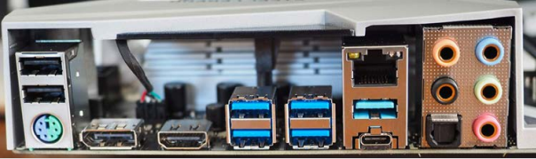

La Placa Madre (PM) es el circuito electrónico donde se conectan todos los componentes que dan funcionamiento a un sistema de cómputo o computadora. (En el caso de las computadoras portátiles, muchos de estos componentes están soldados a dicha placa). La Placa Madre también es un componente y es intermediario entre cada una de las partes para que puedan comunicarse entre sí. Estas piezas individuales se instalan en la placa por medio de los diversos conectores, fichas y puertos localizados en su parte superior. Entre todas esas piezas y la PM conforman un sistema que permite emitir imagen en un monitor e interactuar en ella.
Existen 2 tipos de mothers:
Comenzando por las entradas de teclado y mouse. La primera tradicionalmente era violeta mientras que la segunda era verde. Hoy en día estos periféricos se conectan vía USB por cable o inalámbrico por bluetooth. Continuando con la salida de video. Encontramos salidas de video de muchos tipos, pero entre las más comunes y de más actual a más antigua encontramos: Displayport o mini DP HDMI, DVI, S-Video y VGA. Lo que cambia entre todas ellas es la cantidad y calidad de información que transmiten. Tengamos en cuenta que a partir de la aparición del HDMI, el audio y el video fueron transmitidos por el mismo conector.
